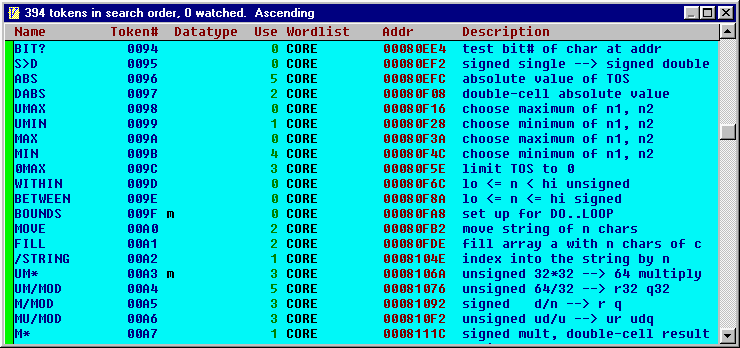

Token Browser
The token browser window lists all of the target words in the search order. To sort a column, click on its name in the header bar or press the key in table TB1.
| Field | What this is: | Click to: |
| Name | Name of the word | View source code |
| Token# | Its xt (token#) | See object code |
| Datatype | cell, [cell], double, etc. | Add to watch list |
| Use | # of times used by other words | |
| Wordlist | Which vocabulary in the search order | |
| Addr | It's address in ROM | See object code |
| Description | 32-character summary |
Sample token browser window

| Table TB1. Key usage | |
| A | Sort by address |
| D | Sort by data type |
| N | Sort by name |
| T | Sort by token number |
| U | Sort by usage |
| W | Sort by wordlist |
| + | Sort order = ascending |
| - | Sort order = descending |
| ctrl-shift-G | Create glossary in text format |
| ctrl-shift-H | Create glossary in HTML format |
| ctrl-C | Copy table to clipboard |
| ESC | Close window |
The default filename for the text glossary is FFGLOS.TXT. The default filename for the HTML glossary is FFGLOS.HTM. After creating a glossary, you should probably rename the created file. The glossary is created in the same order as the listing in the window so you can sort the glossary by name, xt, etc. and include only the vocabularies you want.
Ctrl-Shift-G or Ctrl-Shift-H extracts comment information from source files. It captures the stack picture ( ... ) and any \ comments immediately after the first line of a definition and starting in column 1.
Once a word is in the watch list, it's displayed in red. The watch list can be cleared by CLEARWATCH.